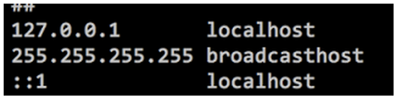

Many software today are internationalized. They are customised according to the regions and locales. Testing it, is about verifying the translated text, date formats, measurements, etc. Testing localisation is an integral part of internationalized applications.
Global applications have different text, date formats, etc. for different top level domains. For example, a global site www.myglobalsite.com will have text in English while www.myglobalsite.fr will have text in French. Their date formats, their measurement units, etc may differ.
For testing these differences, we will require such domains. But what if our application needs to be tested on our local machines? What if we do not still have the domain names?
So, hosts entries can come to the rescue!
The /etc/hosts file (present on your computer) is the place where the mapping of host names to IP addresses are kept. Our machines require to know some hostnames to IP address mappings before DNS can be referenced.
IP addresses- They are dotted numbers that identify every computer on the Internet host names- The computer name which is used to identify a it on the Internet (IP addresses are difficult to remember. So, host names are commonly used)
A typical /etc/hosts file consists of this:
To test our 'myglobalsite' application locally, we can add entries to this file.
The entries can be:
127.0.0.1 myglobalsite.com 127.0.0.1 myglobalsite.fr 127.0.0.1 myglobalsite.ch 127.0.0.1 myglobalsite.co.uk
and so on.
When the application runs on the local machine, when we hit the URL http://myglobalsite.com, the site for the '.com' top level domain will be shown. e.g.: Text in English. Similarly, when the URL http://myglobalsite.fr is hit, then the site for the '.fr' top level domain will be shown. e.g.: Text in French.
This way, we can make simple changes in the /etc/hosts file to be able to test the global application on our local machines.